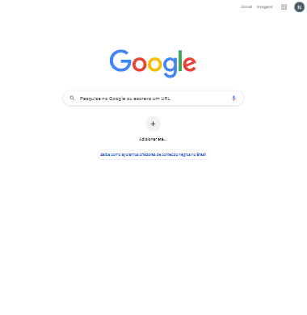
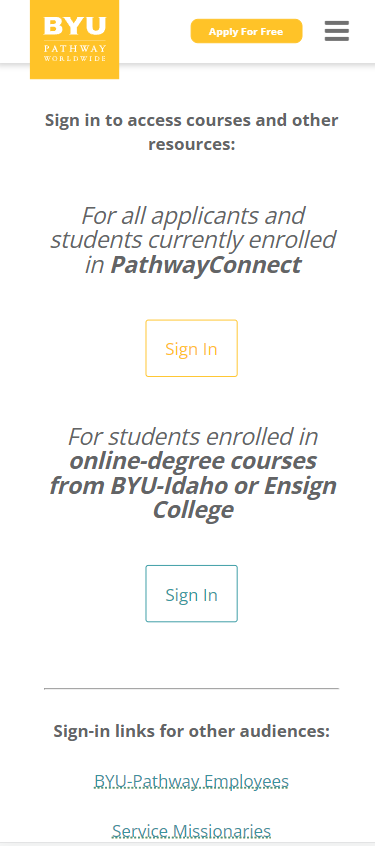

White Space and Clean Design
Google Homepage
google.com/ On the Google website, we have an excellent example of the usage of white space and clean design, as we can check on the screenshot it has and organize design and white space that is organized to make the user feels comfortable in the webpage, not looking as a bug on the site design.
Visual Hierarchy
Apple Homepage
apple.comOn Apple's home page we have an excellent example of a Visual Hierarchy because the pages guide the user to the order that can see the page using font size to cath the user's attention to the main announcement and other for the things that Apple wants you to read.
PARC: Alignment
BYU Pathway sign in Portal
byupathway.org/sign-in On the BYU sign-in page we have an exceptional example of Alignment, if you take a look closer we can draw a perfect line of the margin that all text is following, and also we can note all the text in the center of the page, so perfect align.